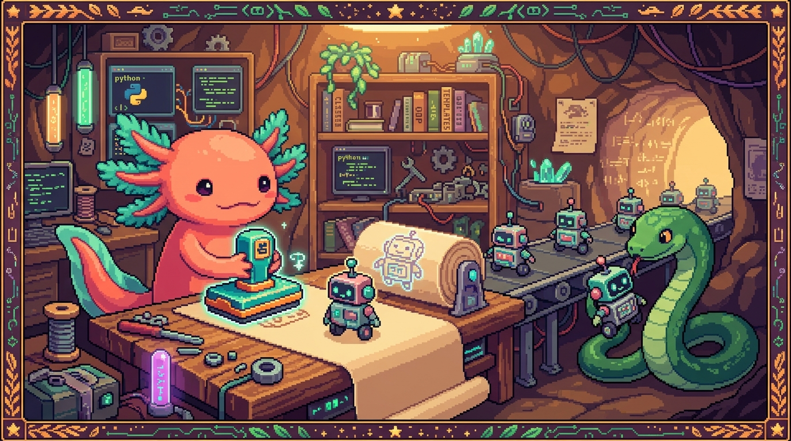

Capitulo 11 — Clases y objetos (POO)

Hola otra vez, soy Bit, tu ajolote guia. Hasta ahora has guardado datos en variables, listas y diccionarios, y has escrito funciones para hacer cosas con esos datos. Funciona... pero cuando una app crece, esos datos sueltos se vuelven un charco de variables que nadie entiende. En este capitulo vas a aprender a agrupar datos y comportamiento en un mismo molde: eso se llama Programacion Orientada a Objetos (POO). Es justo lo que hace PolyPaw por dentro, y tambien lo que hace Flet para dibujar botones y textos en pantalla. Respira, mueve la colita y vamos despacio. 🐾
1. El problema que la POO viene a resolver
Imagina que en PolyPaw quieres representar a un usuario que esta aprendiendo idiomas. Cada usuario tiene un nombre, un idioma que estudia, un puntaje y un nivel. Sin POO, terminarias con algo asi:
nombre_usuario = "Ana"
idioma_usuario = "ingles"
puntaje_usuario = 0
nivel_usuario = 1
Cuatro variables sueltas para un usuario. ¿Y si hay 50 usuarios? ¿Y si cada uno ademas puede ganar puntos? El charco crece y se vuelve imposible de cuidar.
La POO te deja crear un molde llamado Usuario. Ese molde dice "todo usuario tiene nombre, idioma, puntaje y nivel, y ademas sabe ganar puntos". Despues fabricas usuarios concretos a partir del molde, tantos como quieras, y cada uno cuida sus propios datos.
🟦 ¿Que significa? — Programacion Orientada a Objetos (POO)
Es una forma de organizar el codigo agrupando los datos (lo que algo "es") y las acciones (lo que algo "sabe hacer") dentro de una misma unidad llamada objeto. Para que sirve: mantener apps grandes ordenadas, donde cada pieza tiene su sitio. Donde se usa en un repo real: PolyPaw la usa para representar misiones, usuarios y la base de datos; su archivo
database_manager.pyes practicamente una clase que gestiona todo el guardado.
2. Clase y objeto: el molde y la galleta
La idea central de la POO son dos palabras: clase y objeto. La forma mas facil de entenderlas es pensar en moldes de galletas.
- La clase es el molde de galletas. Define la forma: "esta galleta tendra forma de estrella".
- El objeto es cada galleta concreta que sacas del molde. Todas comparten la forma, pero cada una es una galleta distinta (una con mas azucar, otra mas dorada).
🟦 ¿Que significa? — Clase
Es la plantilla o molde que describe como sera algo: que datos tendra y que podra hacer. Para que sirve: definir una sola vez la estructura y reutilizarla cuantas veces quieras. Donde se usa en un repo real: en PolyPaw, una clase
DatabaseManagerdescribe como se guarda el progreso del jugador; se escribe una vez y la usa toda la app.🟦 ¿Que significa? — Objeto
Es una cosa concreta creada a partir de una clase; tiene sus propios valores. Para que sirve: representar elementos individuales (un usuario, un boton, una mision) que comparten estructura pero no datos. Donde se usa en un repo real: cada control que ves en la pantalla de PolyPaw (un boton, un texto) es un objeto creado por Flet.
🟦 ¿Que significa? — Instancia
Es otra palabra para "objeto creado a partir de una clase". Decimos "instancia de Usuario" igual que "objeto Usuario". Para que sirve: hablar con precision cuando programas. Donde se usa en un repo real: en
main.pyde PolyPaw se crea una instancia deDatabaseManageral arrancar la app.💡 Tip
Una frase para no olvidarlo nunca: la clase es la receta, el objeto es el pastel. Puedes hornear muchos pasteles con la misma receta.
3. Tu primera clase
Vamos a escribir el molde Usuario. En Python una clase se define con la palabra class y, por convencion, su nombre empieza con mayuscula.
class Usuario:
pass
🟦 ¿Que significa? —
classEs la palabra clave de Python para empezar a definir una clase. Para que sirve: decirle a Python "aqui empieza un molde nuevo". Donde se usa en un repo real: en
database_manager.pyde PolyPaw, la lineaclass DatabaseManager:abre la clase que controla el guardado.🟦 ¿Que significa? —
passEs un relleno que significa "aqui no hago nada todavia". Python no permite bloques vacios, asi que
passocupa el hueco. Para que sirve: dejar una clase o funcion a medio escribir sin que reviente. Donde se usa en un repo real: en cualquier proyecto Python (como PolyPaw) mientras se esboza codigo que aun no esta listo.
Esa clase no hace nada util todavia, pero ya es valida. Para crear un objeto a partir de ella, llamas a la clase como si fuera una funcion:
ana = Usuario()
print(ana) # <__main__.Usuario object at 0x7f...>
ana es ahora un objeto de tipo Usuario. Lo que ves al imprimirlo es la direccion en memoria; aun no tiene datos. Vamos a darle datos.
4. __init__: el constructor, donde nace el objeto
Para que cada usuario nazca con su nombre y su idioma, usamos un metodo especial llamado __init__. Se ejecuta automaticamente cada vez que creas un objeto.
class Usuario:
def __init__(self, nombre, idioma):
self.nombre = nombre
self.idioma = idioma
self.puntaje = 0
self.nivel = 1
Ahora cuando hagas Usuario("Ana", "ingles"), Python llama a __init__ por ti y guarda esos valores dentro del objeto.
ana = Usuario("Ana", "ingles")
luis = Usuario("Luis", "frances")
print(ana.nombre) # Ana
print(luis.idioma) # frances
print(ana.puntaje) # 0
¡Mira eso! Dos usuarios, cada uno con sus propios datos, fabricados con el mismo molde.
🟦 ¿Que significa? —
__init__(constructor)Es un metodo especial que se ejecuta solo, en el momento exacto en que creas el objeto, para darle sus valores iniciales. Para que sirve: asegurar que todo objeto nace "completo" y nunca a medias. Donde se usa en un repo real: el
__init__deDatabaseManageren PolyPaw prepara la ruta del archivo JSON donde se guardara el progreso, en cuanto la base de datos se crea.🟦 ¿Que significa? — Constructor
Es el nombre general (en muchos lenguajes) del codigo que construye un objeto nuevo. En Python ese codigo es
__init__. Para que sirve: distinguir el momento de "nacimiento" del objeto del resto de su vida. Donde se usa en un repo real: en PolyPaw, cada vez que arrancamain.pyel constructor deDatabaseManagercorre una sola vez.💡 Tip
Esos dos guiones bajos antes y despues (
__init__) se leen en voz alta como "dunder init" (de double underscore, doble guion bajo). Python tiene varios metodos "dunder" con poderes especiales; este es el mas importante para empezar.Comparado con JavaScript (lo viste en el modulo 03): alli el constructor de una clase se llama literalmente
constructor(). En Python se llama__init__. La idea es la misma; cambia el nombre.
5. self: el objeto hablando de si mismo
Habras notado la palabra self por todas partes. Es la que mas confunde al principio, asi que vamos despacito.
Cuando escribes self.nombre = nombre, le dices a Python: "guarda este nombre dentro de este objeto en concreto". self es el propio objeto, refiriendose a si mismo.
Piensa en Bit (¡yo!) diciendo "mi colita", "mi nombre". Esa palabra "mi" es self. Cuando Ana habla, su self es Ana; cuando Luis habla, su self es Luis. El mismo codigo, distinto dueño.
class Usuario:
def __init__(self, nombre, idioma):
self.nombre = nombre # "mi nombre es..."
self.idioma = idioma # "mi idioma es..."
self.puntaje = 0
self.nivel = 1
🟦 ¿Que significa? —
selfEs el nombre que usa Python, dentro de la clase, para referirse al objeto concreto sobre el que se esta trabajando. Para que sirve: que cada objeto guarde y lea sus propios datos sin confundirse con los de otro. Donde se usa en un repo real: en
database_manager.pyde PolyPaw, lineas comoself.archivo = ...guardan la ruta del JSON dentro de esa instancia de la base de datos.⚠️ Cuidado
selfsiempre es el primer parametro de los metodos de una clase, pero nunca lo pasas tu al llamarlos. Escribesana.saludar(), noana.saludar(ana). Python pone elselfpor ti, automaticamente. Olvidarselfen la definicion es el error numero uno de quien empieza con POO.Comparado con JavaScript: alli existe
this, que es parecido pero invisible (no aparece como parametro). En Pythonselfse escribe explicitamente en cada metodo. Es mas verboso, pero tambien mas claro.
6. Atributos: los datos del objeto
Cada self.algo = valor que pusiste crea un atributo. Los atributos son las "cajitas de datos" que viven dentro del objeto.
ana = Usuario("Ana", "ingles")
print(ana.nombre) # Ana <- atributo nombre
print(ana.puntaje) # 0 <- atributo puntaje
print(ana.nivel) # 1 <- atributo nivel
Accedes a un atributo con un punto: objeto.atributo. Tambien puedes cambiarlo:
ana.puntaje = 50
print(ana.puntaje) # 50
🟦 ¿Que significa? — Atributo
Es una variable que vive dentro de un objeto y guarda parte de su estado (su nombre, su puntaje, su idioma...). Para que sirve: que cada objeto recuerde sus propios datos a lo largo del programa. Donde se usa en un repo real: en PolyPaw, un control de Flet tiene atributos como
text(el texto que muestra) obgcolor(su color de fondo).🔎 En tu codigo
En PolyPaw, los archivos de misiones (
missions/*.json) guardan datos como el titulo de la mision o las palabras a aprender. Cuando esos datos se cargan en Python, lo natural es meterlos en los atributos de un objetoMision, para que la app trabaje con misiones como objetos y no con diccionarios sueltos.💡 Tip
¿Atributo o variable? Una variable vive suelta en tu programa. Un atributo es una variable que pertenece a un objeto. La diferencia es de quien "tiene la caja".
7. Metodos: las acciones del objeto
Un objeto no solo guarda datos: tambien sabe hacer cosas. Esas acciones se llaman metodos y son funciones definidas dentro de la clase.
Demos a Usuario la capacidad de ganar puntos y de subir de nivel.
class Usuario:
def __init__(self, nombre, idioma):
self.nombre = nombre
self.idioma = idioma
self.puntaje = 0
self.nivel = 1
def ganar_puntos(self, cantidad):
self.puntaje = self.puntaje + cantidad
print(f"{self.nombre} gano {cantidad} puntos. Total: {self.puntaje}")
def subir_nivel(self):
self.nivel = self.nivel + 1
print(f"{self.nombre} subio al nivel {self.nivel}!")
Y asi se usan, otra vez con el punto:
ana = Usuario("Ana", "ingles")
ana.ganar_puntos(30) # Ana gano 30 puntos. Total: 30
ana.ganar_puntos(20) # Ana gano 20 puntos. Total: 50
ana.subir_nivel() # Ana subio al nivel 2!
Fijate: dentro de ganar_puntos usamos self.puntaje para leer y modificar el puntaje de ese mismo usuario. Si lo llamas en luis, tocara el puntaje de Luis, no el de Ana.
🟦 ¿Que significa? — Metodo
Es una funcion que pertenece a una clase y describe algo que el objeto sabe hacer. Para que sirve: poner las acciones junto a los datos que esas acciones usan, en vez de tenerlos separados. Donde se usa en un repo real:
database_manager.pyde PolyPaw ofrece metodos como guardar y cargar el progreso; la app llama a esos metodos en vez de tocar el archivo JSON a mano.💡 Tip
Regla rapida: si esta dentro de una clase y empieza con
def, es un metodo. Si esta suelto, fuera de cualquier clase, es una funcion. Por dentro se escriben igual; cambia donde viven.🔎 En tu codigo
Cuando en PolyPaw el jugador completa una mision, la app no escribe directamente en el JSON. Llama a un metodo del gestor de base de datos (algo como
guardar_progreso(...)). Ese metodo concentra toda la logica de guardado en un solo sitio: si algun dia cambias como se guarda, lo cambias una vez y listo.
8. Por que la POO ordena apps grandes
Imagina PolyPaw sin clases: el codigo para guardar progreso estaria copiado en diez pantallas distintas. Si un dia decides cambiar de archivos JSON a otra forma de guardar, tendrias que corregir diez sitios y seguro olvidas uno. 🫠
Con una clase DatabaseManager, toda la logica de guardar y cargar vive en un solo archivo (database_manager.py). El resto de la app solo dice "oye, gestor, guarda esto" y no le importa el como. Eso tiene un nombre bonito: encapsulamiento.
🟦 ¿Que significa? — Encapsulamiento
Es esconder los detalles internos de algo y ofrecer solo un par de acciones simples para usarlo. Para que sirve: poder cambiar el "como" por dentro sin romper al resto del programa. Donde se usa en un repo real:
DatabaseManageren PolyPaw encapsula el manejo de archivos JSON; las pantallas solo piden guardar o cargar, sin saber donde esta el archivo.🟦 ¿Que significa? — Estado
Es el conjunto de valores que un objeto tiene ahora mismo (el puntaje actual de Ana, su nivel actual). Para que sirve: que el programa recuerde en que punto va cada cosa. Donde se usa en un repo real: en PolyPaw, el progreso del jugador (misiones completadas, puntos) es estado que
DatabaseManagerguarda y restaura.🔎 En tu codigo
Faro/Organizer y RachaSimple estan hechos en TypeScript con React, no en Python; alli no usaras
class Usuariode esta forma. Pero el concepto de agrupar datos y comportamiento aparece igual (en componentes y objetos). La POO de este capitulo es sobre todo para tu codigo Python, como PolyPaw. Y ojo: tunal-digital es HTML/CSS/JS plano y polypaw-nas es configuracion de servidor (Ubuntu, Samba, Cockpit, Tailscale); ninguno de esos dos usa clases de Python.
9. Herencia basica: moldes que nacen de otros moldes
A veces necesitas un molde que es casi igual a otro, pero con algo extra. En PolyPaw, un usuario normal y un usuario premium comparten casi todo, pero el premium tiene alguna ventaja. En vez de copiar toda la clase Usuario, la heredas.
class UsuarioPremium(Usuario):
def __init__(self, nombre, idioma):
super().__init__(nombre, idioma)
self.es_premium = True
def ganar_puntos(self, cantidad):
# El premium gana el doble de puntos
super().ganar_puntos(cantidad * 2)
UsuarioPremium(Usuario) significa "este molde hereda del molde Usuario". Asi obtiene gratis su __init__, sus atributos y sus metodos. Despues le anadimos lo nuestro.
vip = UsuarioPremium("Sara", "aleman")
vip.ganar_puntos(30) # Sara gano 60 puntos. Total: 60
print(vip.es_premium) # True
print(vip.nivel) # 1 <- heredado de Usuario sin escribir nada
🟦 ¿Que significa? — Herencia
Es crear una clase nueva basada en otra ya existente, reutilizando sus atributos y metodos y anadiendo o cambiando lo necesario. Para que sirve: evitar copiar codigo cuando dos cosas se parecen mucho. Donde se usa en un repo real: en PolyPaw, los controles de Flet (Boton, Texto, Columna...) heredan todos de un control base comun; por eso todos comparten propiedades como el color o el tamano.
🟦 ¿Que significa? —
super()Es una funcion que llama al metodo de la clase padre (la clase de la que heredas). Para que sirve: reaprovechar lo que el padre ya hace en vez de reescribirlo. Donde se usa en un repo real: al crear clases en PolyPaw sobre Flet, se usa
super().__init__()para que el control base se prepare correctamente antes de anadir lo propio.🟦 ¿Que significa? — Clase padre y clase hija
La clase padre (o base) es de la que se hereda; la clase hija (o derivada) es la que hereda. Aqui
Usuarioes el padre yUsuarioPremiumla hija. Para que sirve: describir relaciones tipo "esto es un tipo especial de aquello". Donde se usa en un repo real: en Flet, un Boton es una clase hija de un control mas general; "un boton es un tipo de control".⚠️ Cuidado
No abuses de la herencia. Solo tiene sentido cuando de verdad puedes decir "X es un tipo de Y" (un usuario premium es un usuario). Si te descubres heredando solo para ahorrar dos lineas, probablemente sea mejor un atributo o un metodo normal. La herencia mal usada enreda mas de lo que ayuda.
Comparado con JavaScript: alli heredas con
class Hija extends Padrey llamas al padre consuper(...). En Python escribesclass Hija(Padre)y usassuper().__init__(...). Mismo concepto, sintaxis distinta.
10. Como se conecta esto con Flet (lo que usa PolyPaw)
PolyPaw esta hecho integramente en Python con el framework Flet, que sirve para construir interfaces graficas (botones, textos, columnas). Y aqui esta lo bonito: todo en Flet es un objeto de una clase.
Cuando en PolyPaw aparece un boton para empezar una mision, por dentro hay algo como:
import flet as ft
boton = ft.ElevatedButton(text="Empezar mision", on_click=iniciar)
texto = ft.Text(value="Hola, Sara")
ft.ElevatedButton y ft.Text son clases que viven dentro de Flet. Cada vez que escribes ft.Text(...) estas creando un objeto (una instancia), igual que hiciste con Usuario("Ana", "ingles"). Y text= o value= son atributos que le pasas, igual que nombre e idioma.
🟦 ¿Que significa? — Framework
Es un conjunto grande de codigo ya hecho (con sus clases y metodos) sobre el que construyes tu app, siguiendo sus reglas. Para que sirve: no reinventar lo basico (dibujar botones, manejar clics) y concentrarte en lo tuyo. Donde se usa en un repo real: PolyPaw usa el framework Flet para toda su interfaz; Faro/Organizer y RachaSimple usan otros (React) en TypeScript.
🟦 ¿Que significa? — Control (en Flet)
Es cada pieza visual de la interfaz (un boton, un texto, una imagen), representada como un objeto de una clase de Flet. Para que sirve: construir la pantalla juntando controles como piezas de Lego. Donde se usa en un repo real: la pantalla de misiones de PolyPaw se arma colocando controles
Text,ElevatedButton,Columny similares.🔎 En tu codigo
Cuando entiendes que
ft.Text(...)es "crear un objeto de la claseText", la documentacion de Flet deja de dar miedo: cada control es una clase con sus atributos (que ves) y sus metodos (que hace). Lo que aprendiste conUsuariose aplica tal cual a cada control de PolyPaw.💡 Tip
Asi todo encaja: en
main.pyde PolyPaw se crea una instancia deDatabaseManager(tu propia clase) y se crean muchos controles de Flet (clases ajenas). Tus clases y las del framework conviven como objetos en el mismo programa. Eso es POO trabajando a tu favor.
11. Juntando todo: un mini ejemplo estilo PolyPaw
Cerremos con un ejemplo que combina lo aprendido: una clase Mision y una clase Jugador que la completa.
class Mision:
def __init__(self, titulo, recompensa):
self.titulo = titulo
self.recompensa = recompensa
self.completada = False
def completar(self):
self.completada = True
print(f"Mision '{self.titulo}' completada!")
class Jugador:
def __init__(self, nombre):
self.nombre = nombre
self.puntos = 0
def jugar(self, mision):
mision.completar()
self.puntos = self.puntos + mision.recompensa
print(f"{self.nombre} ahora tiene {self.puntos} puntos.")
# Usamos las clases:
sara = Jugador("Sara")
saludos = Mision("Aprender saludos en aleman", recompensa=25)
sara.jugar(saludos)
# Mision 'Aprender saludos en aleman' completada!
# Sara ahora tiene 25 puntos.
print(saludos.completada) # True
Mira como un objeto (sara) recibe a otro objeto (saludos) y trabaja con el. Asi se comunican los objetos en una app real: cada uno cuida lo suyo y se piden cosas con metodos. Eso, multiplicado por muchas clases, es PolyPaw por dentro. 🐾
💡 Tip
Cuando una clase te quede grande y confusa, hazte esta pregunta: "¿esto es lo que la cosa es (atributo) o lo que la cosa hace (metodo)?". Esa sola pregunta ordena casi cualquier clase.
✅ Checklist — ¿ya domino esto?
- [ ] Puedo explicar con mis palabras la diferencia entre clase y objeto (molde y galleta).
- [ ] Se que instancia es lo mismo que objeto creado desde una clase.
- [ ] Defino una clase con
classy le doy un nombre con mayuscula inicial. - [ ] Entiendo que
__init__es el constructor y corre solo al crear el objeto. - [ ] Se que
selfes "el propio objeto" y va como primer parametro de los metodos. - [ ] Distingo un atributo (dato) de un metodo (accion) y accedo a ambos con el punto.
- [ ] Puedo crear varios objetos del mismo molde, cada uno con sus propios datos.
- [ ] Entiendo la herencia y para que sirve
super(). - [ ] Veo por que la POO ayuda a ordenar apps grandes (encapsulamiento).
- [ ] Reconozco que en PolyPaw cada control de Flet es un objeto de una clase.
🧪 Ejercicios
-
En papel (sin computadora). Escribe la diferencia entre clase y objeto usando tu propio ejemplo de la vida real (por ejemplo: molde de coches y los coches concretos). No vale el ejemplo de las galletas.
-
En papel. Dada la clase
Usuariodel capitulo, di que valores tendranana.nombre,ana.puntajeyana.niveljusto despues de hacerana = Usuario("Ana", "ingles"). Explica de donde sale cada uno. -
💻 Crea una clase
Mascotacon__init__que recibanombreytipo(por ejemplo "ajolote"), y guarde un atributoenergia = 100. Anade un metodojugar()que reste 10 a la energia e imprima"{nombre} jugo, energia: {energia}". Crea un objeto llamadobitde tipo ajolote y haz que juegue tres veces. 🐾 -
💻 Anade un metodo
comer(cantidad)a tu claseMascotaque sume energia (sin pasar de 100). Pruebalo: deja a Bit con poca energia jugando y luego dale de comer. Imprime la energia final. -
💻 Crea una clase
MascotaMagicaque herede deMascota. En su__init__usasuper().__init__(...)y anade un atributohechizos = 0. Anade un metodolanzar_hechizo()que sume 1 ahechizose imprima un mensaje. Comprueba queMascotaMagicatambien puedejugar()aunque no escribiste ese metodo en ella (lo heredo). -
💻 Mini reto estilo PolyPaw. Crea una clase
Mision(contituloyrecompensa) y una claseJugador(connombreypuntos). Dale alJugadorun metodocompletar(mision)que sume la recompensa a sus puntos e imprima el total. Crea un jugador y dos misiones, y completalas. Compara tu solucion con el ejemplo de la seccion 11.
Lo lograste. Hoy pasaste de tener datos sueltos en un charco a tener moldes que fabrican objetos ordenados, justo como PolyPaw organiza su base de datos y sus pantallas. La POO es de esas ideas que al principio cuesta ver y de repente, un dia, lo ves en todas partes. Cuando vuelvas a abrir
database_manager.py, ya no veras codigo raro: veras una clase con su__init__, suselfy sus metodos, contandote una historia que ahora entiendes. Nos vemos en el siguiente capitulo. — Bit 🐾